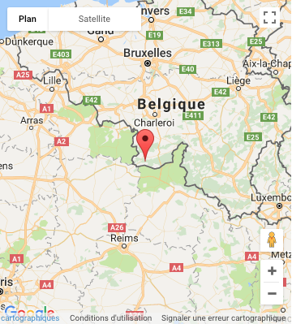

Historique
En 1850, le prince Joseph de Caraman-Chimay invite les moines de l'Abbaye de Saint-Sixte à Westvleteren (Flandre-Occidentale) à fonder une nouvelle abbaye cistercienne. Dès 1862, de la bière est produite à partir de l'eau des puits de l'abbaye. Après la Seconde Guerre mondiale, les moines reprennent possession de l'abbaye qui avait été occupée par les Allemands. Toutes les cuves avaient été fondues. Il fallut donc recréer l'entièreté de la brasserie. En 1948, le Père Théodore De Haene s'inscrit à l'université de Louvain où il apprend la fabrication de la bière avec le Pr De Clerck. Ensemble, ils créent la nouvelle levure de bière des futures bières de Chimay. En 1956, la communauté produit une bière spéciale pour la fête de Noël. Cette bière est aujourd'hui commercialisée sous le nom de Chimay Bleue. Depuis 1978 des laïcs gèrent l'embouteillage sur le site de Baileux (40 000 bouteilles à l'heure) parce que la place commençait à manquer à l'abbaye et pour ne pas perturber la vie monastique. En 2012, la production dépasse 170,000 hectolitres par an. La Chimay réalise plus de 50 % de son chiffre d'affaires à l'exportation. La bière de Chimay n'est ni filtrée, ni pasteurisée.
Types de bières et leurs caractéristiques
Cinq types sont produits :
- Chimay Bleue (brune - 9° - 33 cl), baptisée Grande Réserve en 75 cl.
- Chimay Blanche (Triple) (blonde/ambrée - 8° - 33 cl), baptisée Cinq Cents en 75 cl.
- Chimay Rouge (brune - 7° - 33 cl), baptisée Première en 75 cl.
- Chimay Dorée (blonde - 4,8° - 33 cl), il s'agit à l'origine de la bière de table des moines de l'abbaye.
- Chimay Bleue Vieillie en barriques (brune - 10%). Lancée en 2015, il existe plusieurs éditions.
Fabrication
La Chimay est une authentique bière Trappiste : cela signifie qu’elle est brassée dans l’enceinte d’un monastère Trappiste, sous le contrôle et la responsabilité de la communauté monastique, qui est engagée dans tout le processus d’exploitation de la bière.
Dans la cuve d’empâtage, on mélange les diverses matières premières: l’eau, originaire exclusivement des deux puits situés sur le terrain de l’Abbaye, le malt moulu en farine (orge germée puis séchée). Pour que l’amidon du grain se transforme en sucres fermentescibles, cette masse liquide est chauffée à différents paliers de température.
La masse liquide est ensuite filtrée afin de séparer la drêche(enveloppes du grain et résidus non solubles) du moût (partie liquide que l’on ne peut pas encore appeler bière à ce stade de la fabrication). La drêche constitue un aliment de premier choix pour le bétail: les fermiers des environs viennent la chercher pour nourrir leurs vaches dont le lait se retrouvera dans le fromage… de Chimay !
Le moût est ensuite porté à ébullition à 100°C. C’est à ce moment que l’on y rajoute le houblon, dont une partie en fin d’ébullition de manière à rendre l’amertume et l’arôme bien présents dans la bière. Cette ébullition rend le moût stérile.
Le moût est clarifié dans le Whirpool afin d’en éliminer les éléments solides, puis refroidi avant de partir en cuve de fermentation.
Le moût est alors envoyé vers les cuves de fermentation. Au bout de 3 à 5 jours, on obtient un liquide que l’on peut appeler “bière”. Parce que cette fermentation se déroule à une température se situant entre 18 et 32°C et que la levure remonte à la surface de la bière fermentée, on parle de “fermentation haute”.
Au cours de la fermentation du moût, la levure s’est multipliée. Il faut donc en retirer l’excédent. Pour ce faire, on centrifuge la bière puis on la refroidit. Les résidus de levure sont récupérés, séchés et comprimés pour devenir les fameux comprimés de levure de bière trappiste riches en vitamines B et H, recommandés comme puissant reconstituant naturel.
Pendant quelques jours, la bière est envoyée dans une cuve de garde maintenue à une température proche de 0°C. Ce procédé consiste à éliminer les derniers résidus solides encore présents dans la bière.
La bière issue de la garde est plate, limpide et brillante. On va donc lui ajouter de la levure fraîche pour atteindre le bon volume final en alcool et en pétillance. Ensuite, cette bière est acheminée en camion citerne vers le site d’embouteillage de Baileux.
La bière, additionnée de levure, est mise en bouteille au rythme de 40.000 bouteilles heures. Sa mousse et son pétillant sont obtenus par le procédé le plus ancien et le plus naturel qui soit : la refermentation en bouteille. Elle est soutirée complètement « plate ». C’est en lui ajoutant préalablement du sucre et de la levure, dans sa bouteille, que l’on provoque cette nouvelle maturation, véritable champagnisation qui s’opère en trois semaines. Elle produit une saturation en gaz carbonique tout en rendant la bière encore plus digeste et en enrichissant sa teneur en alcool, affinant sa personnalité.
Localisation
|  |
|